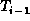
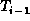
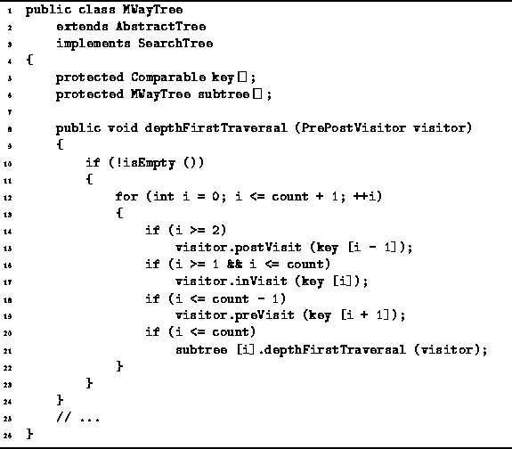
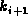
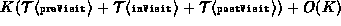

Data Structures and Algorithms
with Object-Oriented Design Patterns in Java
Data Structures and Algorithms
with Object-Oriented Design Patterns in JavaWhereas inorder traversal of an N-ary tree is not defined for N>2, inorder traversal is defined for an M-way search tree: By definition, the inorder traversal of a search tree visits all the keys contained in the search tree in order.
Program  is an implementation of
the algorithm for depth-first traversal of an M-way search tree
given in Section .
The keys contained in a given node are visited
(by calling the inVisit method of the visitor)
in between the appropriate subtrees of that node.
That is, key is visited in between subtrees  and .
is an implementation of
the algorithm for depth-first traversal of an M-way search tree
given in Section .
The keys contained in a given node are visited
(by calling the inVisit method of the visitor)
in between the appropriate subtrees of that node.
That is, key is visited in between subtrees  and .

Program: MWayTree class depthFirstTraversal method.
In addition, the postVisit method is called on after subtree has been visited, and the preVisit method is called on  before subtree is visited.
It is clear that the amount of work done at each node during the course of a depth-first traversal is proportional to the number of keys contained in that node. Therefore, the total running time for the depth-first traversal is , where K is the number of keys contained in the search tree.
 Copyright © 1998 by Bruno R. Preiss, P.Eng. All rights reserved.
Copyright © 1998 by Bruno R. Preiss, P.Eng. All rights reserved.